| SOURCE | TITLE| IMAGE MATCH | click to source page |
| Ukiyo-e Search | Japanese Print by Hosoda Eishi | 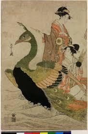 |
| Look and Learn History Picture Archive | Two women saiIIng in a boat in the shape of a peacock free public domain image | Look and Learn | 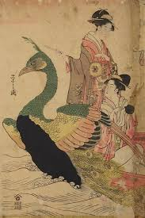 |
| Descubre 98 ideas de Japo y arte japonés | tatuajes japoneses tradicionales, tatuajes japoneses, arte de tatuaje japonés y más | 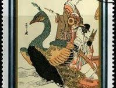 | |
| Alamy | The Peacock Boat. Chobunsai Eishi; Japanese, 1756-1829. Date: 1790-1801. Dimensions: 35 x 69.8 cm (overall). Color woodblock print; oban triptych. Origin: Japan. Museum: The Chicago Art Institute Stock Photo - Alamy | 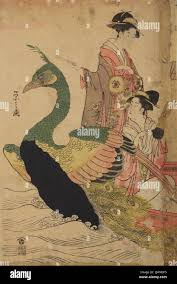 |
| heritage-print.com | The Yoshiwara Parade in Autumn, ca. 1793 Print. Art Prints, Posters & Puzzles from Heritage Images | 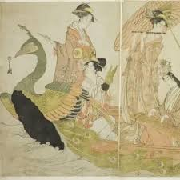 |
| eBay | KORIUSAI Two JAPANESE PRINTS COURTESAN TEA CEREMONY 12x8¨and 10x7¨ | eBay | 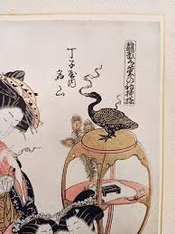 |
| 1stDibs | Eishi Chobunsai - Eishi Chobunsai, Phoenix Boat, Japanese Woodblock Print, Beauties, Edo, Ukiyo-e For Sale at 1stDibs | 18th century japanese woodblock prints, samurai woodcuts, phoenix ukiyo e | 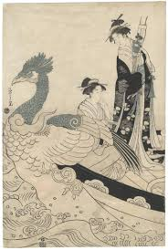 |
| Ukiyo-e Search | Japanese Print by Kitagawa Utamaro | 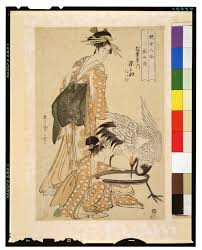 |
| Kitagawa Utamaro1 (v. 1753 - 31 octobre 1806) The Immortal Lin Heqing, represented by Somenosuke of the Matsubaya, kamuro Wakagi and Wakaba (Rinnasei, Matsubaya uchi Somenosuke, Wakagi, Wakaba), from the series Eight | 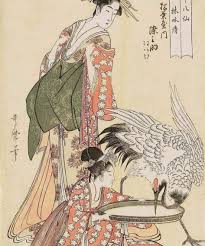 | |
| AbeBooks | Japanese Prints from the Early Masters to the Modern. First printing in dust jacket. by Michener, James A.: Fine Hardcover (1959) 1st Edition, Illustrated Edition | J & J House Booksellers, ABAA | 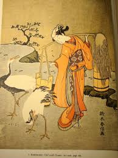 |
| Fuji Arts | Utamaro (1750 - 1806) Beauties of the Matsubaya - Fuji Arts Japanese Prints | 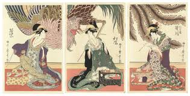 |
| Chairish | 1963 After Harunobu "Woman Riding the Crane", Full-Color Print From Japan | Chairish | 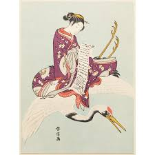 |
| Fine Art America | Woman with peacock on plum blossom, Yashima Gakutei, c. 1868 - before 1912 Painting by Celestial Images - Fine Art America | 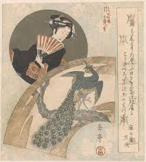 |
| Phoenix and Beauties', a ca. 1780-90s triptych woodblock print, by Kitagawa Utamaro (喜多川 歌麿; c. 1753–1806), one of the most highly regarded designers of ukiyo-e woodblock prints and paintings during the Edo | 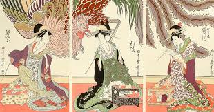 | |
| Lindela Travel & Tours | 50 Best Japanese Souvenirs and Where to Buy Them | 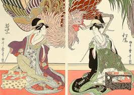 |
| Japanese Gallery Kensington | Japanese Artists | Japanese art | Japanese antiques | 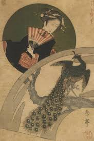 |
| WorthPoint | Harunobu "Girl with Cranes" Japanese Woodblock Print 1760's | #482390364 | 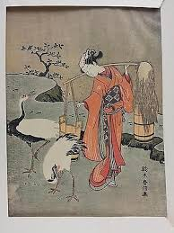 |
| MutualArt | Gakutei Yashima | 151 Artworks | MutualArt | 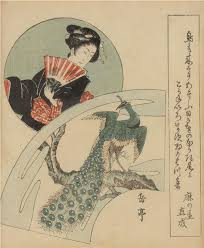 |
| Tumblr | A twisted towel worn around one's head for a headband, Hachi-maki 鉢巻: worn as a symbol of perseverance, effort, and/or courage... – @thekimonogallery on Tumblr | 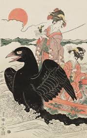 |
| Muzeum Narodowe w Warszawie | Reproduction of: Court Dancer Shirabyôshi 白拍子 | National Museum in Warsaw - Digital exposition | 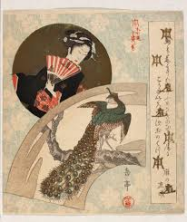 |
| What is the significance of the bird in the 1886 "Courtesans of Edo in a Boat" print? | 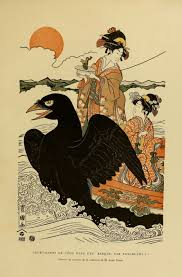 | |
| Yanina Cifuentes (jane666) - Profile | Pinterest | 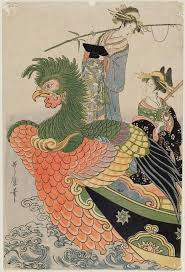 | |
| dawnmichaelsschool.ng | Polished Jasper-Chert Stone – 1.5 lb Earth Art Piece | 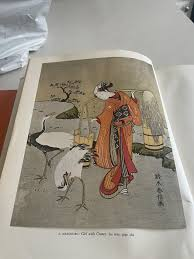 |
| LiveAuctioneers | Suzuki Harunobu Prices - 85 Auction Price Results | 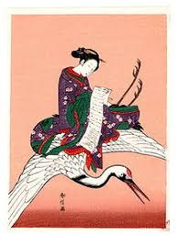 |
| WorthPoint | JAPANESE BOOK,ART,UKIYOE,UKIYO-E,VOL.10 UTAMARO #2,ENGLISH DESCRIPTION | #1911990866 | 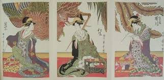 |
| WorthPoint | Japanese Prints: From Early Masters to Modern woodblock Shin Hanga Sosaku Hanga | #440843792 | 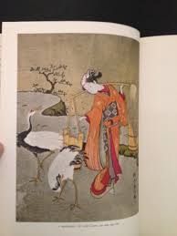 |
| Randoseru: How to Choose the Best Japanese Backpack | 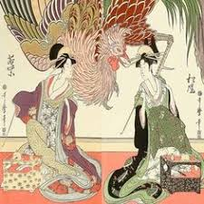 | |
| Creazilla logo | Kitagawa Utamaro – Three Beauties at Matsubaro – Matsukaze [from Utamaro – Ukiyoe meisaku senshū I] - Traditional visual art under Public domain license | 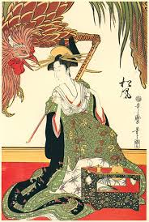 |
| Japanese Woodblock Print — Heavenly Melody, The Maiden on the Phoenix by Suzuki Harunobu (1765) A phoenix soars across the skies of Edo. Seated with quiet dignity upon its back is a | 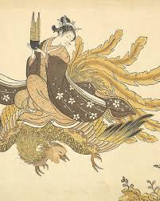 | |
| Japanese Woodblock Print — Women Releasing Cranes by the Seashore by Torii Kiyomitsu (1815) Three women stand quietly at the water's edge, guiding cranes back toward the open sea. The scene unfolds | 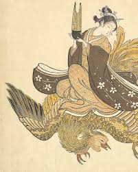 | |
| Ray Morimura | 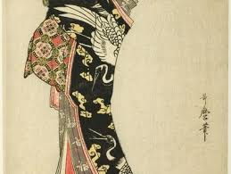 | |
| Wichita Art Museum | Learning from the Japanese: The International Block Print Renaissance - Wichita Art Museum | 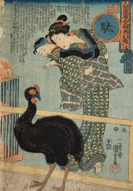 |
| eBay | BIJUTSU SEKAI Woodblock Printed 1891 Japanese Meiji Antique Color Illustrations | eBay | 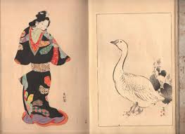 |
| SoundCloud | Stream dan jackson | Listen to music tracks and songs online for free on SoundCloud | 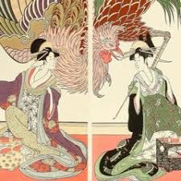 |
| PicClick | JAPANESE WOODBLOCK TORII Kiyonaga Ukiyo-E Women On The Porch Early 20Th C Print $96.00 - PicClick | 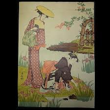 |
| Tumblr | make tea, not love — Flying Beauties of Suzuki Harunobu Suzuki Harunobu... | 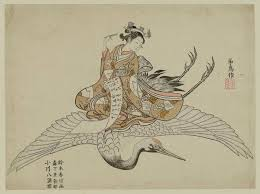 |
| profoundinfra.com | Japanese Prints by James A. Michener Hard Cover book. | 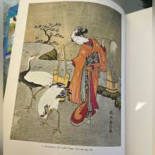 |
| Art of Ukiyoe (@artof_ukiyoe) • Instagram photos and videos | 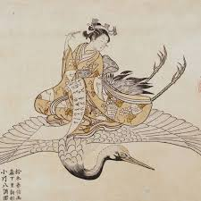 | |
| Fuji Arts | Utamaro (1750 - 1806) Utagawa of the Matsubaya - Fuji Arts Japanese Prints | 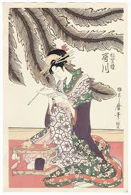 |
| emuseum.com | Parody of Yügao Chapter, Tale of Genji – Works – Honolulu | 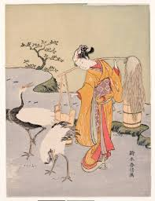 |
| pixels.com | Interior of the House called Ogiya by Chokosai Eisho by Art Anthology-Japanese | 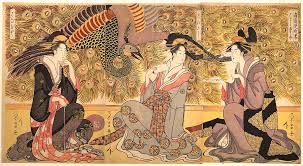 |
| taschen.com | Japanese Woodblock Prints. TASCHEN Books. TASCHEN | 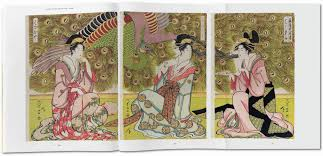 |
| The Kimono Gallery | 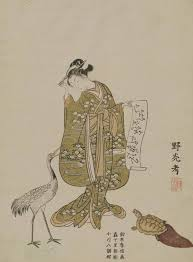 | |
| Curious Ordinary | Tennyo | 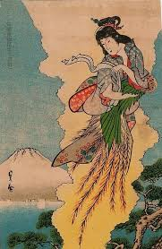 |
| Mokuhankan | Mokuhankan Flea Market : Beauties from Matsubaya (set of 3) | 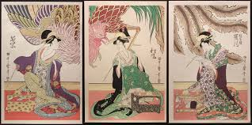 |
| Walkography - Tokyo National Museum and more... : r/japanpics | 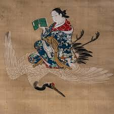 | |
| 1st Art Gallery | Matsubaro Sanbijin Harimise' (Three Beauties On Display In The House Of Matsuba) by Kitagawa Utamaro Reproduction For Sale | 1st Art Gallery | 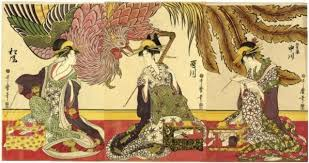 |
| Register - Login | 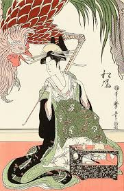 | |
| Flickr | Princess tree and mythical ho-o bird | Japanese art print by… | Flickr | 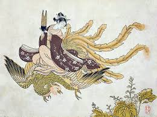 |
| B-sides | 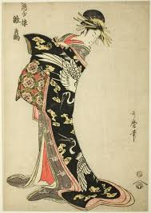 | |
| eBay | Japanese Woodblock Reproduction Print Masterpieces Beautiful Women Prints | eBay | |
| Alain.R.Truong | Scholten Japanese Art presents 'The Baron J. Bachofen von Echt Collection of Golden Age Ukiyo-e' - Alain.R.Truong | |
| Harunobu Suzuki (@HarunobuSuzukiPage) • Facebook | ||
| PICRYL | 593 Isoda koryusai Images: PICRYL - Public Domain Media Search Engine Public Domain Search | |
| Japanese Print "Courtesans of the Matsuba-rô (from right): Utagawa, Matsukaze, Wakamurasaki" by Kitagawa Utamaro | ||
| Sulis Fine Art | Kyoto Hangain After Suzuki Harunobu - 20thC Japanese Woodblock, Geisha And Crane | |
| Flashbak | The Origin of the Hagoromo Pine Trees (Hagoromo matsu no koji) from Ehagaki sekai Postcard of nymph in kimono by the pine tree in the Mt.Fuji back - Flashbak | |
| RISD Museum | Marking the Occasion | RISD Museum | |
| Victoria and Albert Museum | The Tactic of Meeting Up at a Tea House | Matsumura Tatsuemon | Keisai Eisen | V&A Explore The Collections | |
| gibsonsauctions.com.au | Lot - KEISAI EISEN (1790 - 1848), A Courtesan Wearing a Kimono |